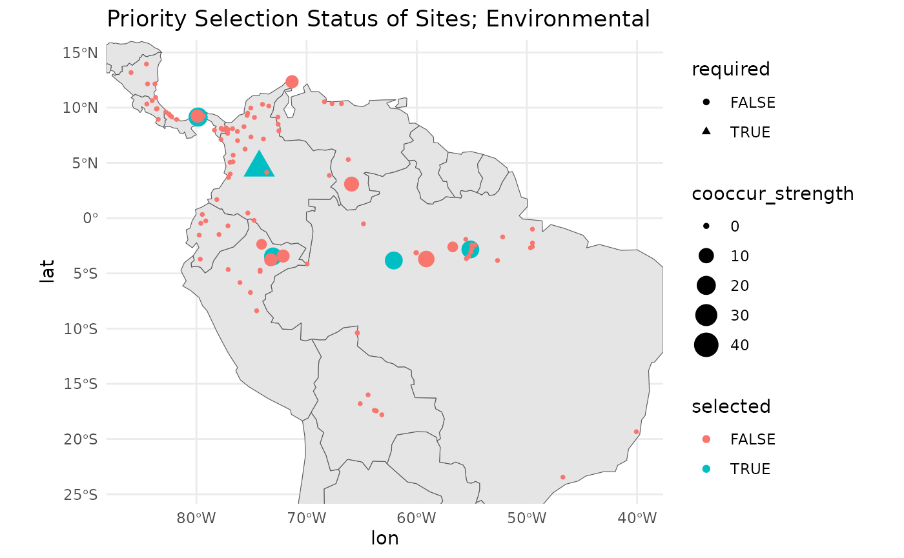

safeHavens offers only one function that operates
explictly on population level data.
prepare data
Load the required packages.
We will use the Bradypus data included in the dismo
package for this vignette.
x <- read.csv(file.path(system.file(package="dismo"), 'ex', 'bradypus.csv'))
x <- x[,c('lon', 'lat')]
x <- sf::st_as_sf(x, coords = c('lon', 'lat'), crs = 4326)And we will create the same base map used in
GettingStarted, note this chunk is ‘hidden’ in the rendered
man pages, but present in the raw vignette documents.
Warning: attribute variables are assumed to be spatially constant throughout
all geometriesWhile all other functions in the package handle sf
objects directly, this function will actually just use a simple
data.frame of sites, to streamline making a couple calculations.
The input to the KMedoidsBasedSample function is a list
with two elements: a distance matrix, and a data frame of site locations
and attributes. The data frame must contain the following columns.
n_sites <- nrow(x)
df <- data.frame(
site_id = seq_len(n_sites),
required = FALSE,
coord_uncertainty = 0,
lon = sf::st_coordinates(x)[,1],
lat = sf::st_coordinates(x)[,2]
)
head(df)
site_id required coord_uncertainty lon lat
1 1 FALSE 0 -65.4000 -10.3833
2 2 FALSE 0 -65.3833 -10.3833
3 3 FALSE 0 -65.1333 -16.8000
4 4 FALSE 0 -63.6667 -17.4500
5 5 FALSE 0 -63.8500 -17.4000
6 6 FALSE 0 -64.4167 -16.0000The second required element, the distance matrix, can be calculated
with the greatCircleDistance function in the package.
Please use this rather than st_distance from
sf for consistency, as the units differ slightly. If you
want to use sf::st_distance, make sure to convert the units
to match the scale of the greatCircleDistance function,
otherwise the results will be incorrect. Note that you can also use an
environmental distance matrix from the first two axes of a PCA, this is
detailed below.
dist_mat <- sapply(1:nrow(df), function(i) {
greatCircleDistance(
df$lat[i], df$lon[i],
df$lat, df$lon
)
})The optimization routine requires at least one ‘required’ site to be specified. Here we will select the site closest to the geographic center of all sites as the required site.
Normally this can refer to existing accessions, or administrative units, or nature preserves which are helping to implement the germplasm collection, and are fortunate enough to already have some samples or at least guaranteed access.
dists2c <- greatCircleDistance(
median(df$lat),
median(df$lon),
df$lat,
df$lon
)
df[order(dists2c)[1],'required'] <- TRUEThis function not only bootstraps sites to simulate the true distribution of the species, but it also bootstraps coordinate uncertainty for each site. Here we will randomly assign 20% of the sites to have coordinate uncertainty between 1 km and 40 km. Note that he argument is always in meters.
Run KMedoidsBasedSample based only on geographic distances
The input to the function is the distance matrix, and the site data.
test_data <- list(
distances = dist_mat,
sites = df
)
str(test_data)
List of 2
$ distances: num [1:116, 1:116] 0 1.83 714.09 807.71 797.93 ...
$ sites :'data.frame': 116 obs. of 5 variables:
..$ site_id : int [1:116] 1 2 3 4 5 6 7 8 9 10 ...
..$ required : logi [1:116] FALSE FALSE FALSE FALSE FALSE FALSE ...
..$ coord_uncertainty: num [1:116] 0 0 0 0 0 ...
..$ lon : num [1:116] -65.4 -65.4 -65.1 -63.7 -63.9 ...
..$ lat : num [1:116] -10.4 -10.4 -16.8 -17.4 -17.4 ...
rm(x, n_sites, uncertain_sites, dists2c)The funtion KMedoidsBasedSample has several arguments
used to control run parameters.
st <- system.time( {
geo_res <- KMedoidsBasedSample( ## reduce some parameters for faster run.
input_data = test_data,
n = 5,
n_bootstrap = 10,
dropout_prob = 0.1,
n_local_search_iter = 10,
n_restarts = 2
)
}
)
Sites: 116 | Seeds: 1 | Requested: 5 | Coord. Uncertain: 19 | BS Replicates: 10
| | | 0% | |======= | 10% | |============== | 20% | |===================== | 30% | |============================ | 40% | |=================================== | 50% | |========================================== | 60% | |================================================= | 70% | |======================================================== | 80% | |=============================================================== | 90% | |======================================================================| 100%The function operates relatively quick with few bootstraps and few sites, but will take a smidge of time longer with more complex scenarios. We recommened using at least 999 bootstraps for real world applications.
return output structure
Five objects are returned by the function.
str(geo_res)
List of 5
$ input_data :'data.frame': 116 obs. of 10 variables:
..$ site_id : int [1:116] 47 21 5 83 100 6 106 19 95 86 ...
..$ required : logi [1:116] TRUE FALSE FALSE FALSE FALSE FALSE ...
..$ coord_uncertainty: num [1:116] 0 0 0 37284 13617 ...
..$ lon : num [1:116] -74.3 -55.1 -63.9 -79.8 -74.1 ...
..$ lat : num [1:116] 4.58 -2.83 -17.4 9.17 -2.37 ...
..$ certain : logi [1:116] FALSE FALSE FALSE FALSE FALSE FALSE ...
..$ cooccur_strength : num [1:116] 40 28 24 20 20 16 16 12 12 8 ...
..$ is_seed : logi [1:116] TRUE FALSE FALSE FALSE FALSE FALSE ...
..$ selected : logi [1:116] TRUE TRUE FALSE TRUE FALSE TRUE ...
..$ sample_rank : int [1:116] 1 2 3 4 4 5 5 6 6 7 ...
$ selected_sites : int [1:5] 6 21 47 83 106
$ stability_score: num 0.2
$ stability :'data.frame': 116 obs. of 3 variables:
..$ site_id : int [1:116] 47 21 5 83 100 6 106 19 95 86 ...
..$ cooccur_strength: num [1:116] 40 28 24 20 20 16 16 12 12 8 ...
..$ is_seed : logi [1:116] TRUE FALSE FALSE FALSE FALSE FALSE ...
$ settings :'data.frame': 1 obs. of 4 variables:
..$ n_sites : num 5
..$ n_bootstrap : num 10
..$ dropout_prob: num 0.1
..$ n_uncertain : int 19The stability score shows how often the most frquently selected network of sites was selected from the bootstrapped runs.
The stability data frame shows how often each site was selected across all bootstrap runs.
head(geo_res$stability)
site_id cooccur_strength is_seed
47 47 40 TRUE
21 21 28 FALSE
5 5 24 FALSE
83 83 20 FALSE
100 100 20 FALSE
6 6 16 FALSEMany users may find the combindation of their input data with a few columns, to be all they need to carry on after the results.
head(geo_res$input_data)
site_id required coord_uncertainty lon lat certain
47 47 TRUE 0.00 -74.3000 4.5833 FALSE
21 21 FALSE 0.00 -55.1333 -2.8333 FALSE
5 5 FALSE 0.00 -63.8500 -17.4000 FALSE
83 83 FALSE 37283.66 -79.8167 9.1667 FALSE
100 100 FALSE 13616.63 -74.0833 -2.3667 FALSE
6 6 FALSE 0.00 -64.4167 -16.0000 FALSE
cooccur_strength is_seed selected sample_rank
47 40 TRUE TRUE 1
21 28 FALSE TRUE 2
5 24 FALSE FALSE 3
83 20 FALSE TRUE 4
100 20 FALSE FALSE 4
6 16 FALSE TRUE 5Run parameters are saved in the settings element.
visualize the selection results
We can plot the required, and selected sites.
map +
geom_point(data = geo_res$input_data,
aes(
x = lon,
y = lat,
shape = required,
size = cooccur_strength,
color = selected
)
) +
# ggrepel::geom_label_repel(aes(label = site_id), size = 4) +
theme_minimal() +
labs(title = 'Priority Selection Status of Sites; Geographic Distances')
As you can see, a couple alternative sites in very close proximity to the selected sites also score highly. Functionally, these could serve as subtitutes for the target sites. What is important is that these combinations are found and articulated in the results.
map +
geom_point(data = geo_res$input_data,
aes(
x = lon,
y = lat,
shape = required,
size = -sample_rank,
color = sample_rank
)
) +
# ggrepel::geom_label_repel(aes(label = sample_rank), size = 4) +
theme_minimal() 
Because we believe that as many populations should be sampled as can be sampled, we include a ‘priority’ ranking with the results. Focus should be on the selected sites, but opportunities to sample beyond these should not be overlooked.
run KMedoidsBasedSample with environmental distances
As mentioned, instead of using geographic distance, we can use environmental distance ordinated into two dimensional space. An analyst should only consider the use of variables they know relevant to the species distrubution for this. However, for the sake of the example we will feed in the full stack of environmental variables available from the dismo package.
extract prep environmental distances
First we read in the rasters.
files <- list.files(
path = file.path(system.file(package="dismo"), 'ex'),
pattern = 'grd', full.names=TRUE )
predictors <- terra::rast(files) # import the independent variables
rm(files)For our environmental distances, we will use a PCA transformation of the environmental variables. We will sample 100 random points from the raster layers to calculate the PCA, and then predict the PCA raster layers across the entire study area. We will take the only the first two layers, from the pca, and calculate environmental distances based on these two layers.
pts <- terra::spatSample(predictors, 100, na.rm = TRUE)
pts <- pts[, names(pts)!='biome' ] # remove categorical variable for distance calc
pca_results <- stats::prcomp(pts, scale = TRUE)
round(pca_results$sdev^2 / sum(pca_results$sdev^2), 2) # variance explained
[1] 0.58 0.26 0.10 0.04 0.02 0.00 0.00 0.00
pca_raster <- terra::predict(predictors, pca_results)From the above we see that the first two PCA axes explain a large amount of the variance observed in this landscape.

rm(pts, predictors, pca_results)We keep the first two PCA layers for environmental distance calculation. More layers will increase dimensionality, and may lead to less useful results. Note that it’s fine to use a euclidean distance calculation for these, as the values are truly in the position of the pca plot.
env_values <- terra::extract(pca_raster,
sf::st_coordinates(
sf::st_as_sf(
df,
coords = c('lon', 'lat'),
crs = 4326
)
)
)[,1:2]
plot(env_values, main = 'environmental distance of points from first two PCA axis')
We’ll ensure that these data are in a proper matrix format for feeding into the function.
Similar to the above run with geographic distances, we create our input object, and run the function.
test_data <- list(
distances = env_dist_mat,
sites = df
)
st <- system.time(
{
env_res <- KMedoidsBasedSample( ## reduce some parameters for shorter run time.
input_data = test_data,
n = 5,
n_bootstrap = 10,
dropout_prob = 0.1,
n_local_search_iter = 50,
n_restarts = 2
)
}
)
Sites: 116 | Seeds: 1 | Requested: 5 | Coord. Uncertain: 19 | BS Replicates: 10
| | | 0% | |======= | 10% | |============== | 20% | |===================== | 30% | |============================ | 40% | |=================================== | 50% | |========================================== | 60% | |================================================= | 70% | |======================================================== | 80% | |=============================================================== | 90% | |======================================================================| 100%
rm(dist_mat, env_dist_mat)This run takes longer than the runs with only the geographic distance matrix.
The environmental distance run takes about 10 seconds longer.
The overall stability score is similar to from the geographic score. When you view the plots you will see that a handful of sites in close proximity to the selected sites would have served as nearly equivanently suitable substitutes. A few areas have dropped out of priority sampling based on this method, but in general the results are pretty similar - the relationship between geographic and environmental distance is somewhat strong in this landscape.
map +
geom_point(data = env_res$input_data,
aes(
x = lon,
y = lat,
shape = required,
size = cooccur_strength,
color = selected
)
) +
# ggrepel::geom_label_repel(aes(label = site_id), size = 4) +
theme_minimal() +
labs(title = 'Priority Selection Status of Sites; Environmental')
alternative methods for required central points
In the example above we use a point at the median geographic center of the populations.
We can also identify the population which is most near the highest density of populations. Intuitively, this would be suggested as a population with a high amount of genetic diversity for the species, although it is unlikely to have accumulated considerably local changes as the effects of drift are overcome by more frequent dispersal.
dens <- with(df, MASS::kde2d(lon, lat, n = 200))
max_idx <- which(dens$z == max(dens$z), arr.ind = TRUE)[1,]
max_point <- c(dens$x[max_idx[1]], dens$y[max_idx[2]])
pops_centre <- sweep(df[c('lon', 'lat')], 2, max_point, "-")
pop_centered_id <- which.min(rowSums(abs(pops_centre^2)))
rm(dens, max_idx, max_point, pops_centre)Alternatively we can identify the population which is most near the ‘center’ of the environmental variable space.
env_centered <- sweep(env_values, 2, sapply(env_values, median), "-")
env_centered_id <- which.min(rowSums(abs(env_centered^2)))
rm(env_values)Personally I would consider the ‘pop centered’ population to be the most important required site to center a design off of. However, it can suffer from sampling bias, and you may want to sense check that the recorded populations are de-duplicated to accomodate this reality.
# geographic centroid was pt 47
centers <- df[ c(env_centered_id, pop_centered_id, 47), ]
centers$type <- c('Environmental', 'Population', 'Geographic')
map +
geom_point(
data = df,
aes(x = lon, y = lat)
) +
geom_point(
data = centers,
aes(x = lon, y = lat),
col = '#FF1493', size = 4
) +
ggrepel::geom_label_repel(
data = centers,
aes(label = type, x = lon, y = lat)
) +
theme_minimal() +
labs(title = 'Possbilities for centers')
rm(env_centered_id, env_centered, pop_centered_id)